Welcome
This cookbook shall guide the reader through the different use cases when adopting, maintaining and using FAIR Digital Objects.
Target audience
This cookbook is targeted at people who:
- build, control or maintain infrastructure or clients that should work with FAIR DOs in some way.
- are interested in how types, profiles and records work and how they can be crated.
Future target groups are also planned:
- People who need to know about how a machine can understand and act on (e.g. record) information within FAIR DOs.
About us
Data Expoitation Methods (DEM), is part of the Steinbuch Centre for Computing (SCC), located at Karlsruhe Institute of Technology (KIT).
Introduction: Working with PIDs
A PID is a unique, persistent and resolvable identifier for an object. This object might be (meta-)data, data streams, sensors, repositories and more. PIDs are associated with information (PID record information) which helps to access the object and to elaborate the use of the object for the use case of a client. This means that a PID resolves to a "landing page for machines" (the PID record), enabling the client to decide if it can work with this object and to programmatically access it. Therefore PIDs are a vital part of FAIR Digital Objects.

The following recipes are about working with PIDs and use the same ingredients and similar steps. Working with PIDs means in this case, to do CRUD-Operations (Create, Retrieve, Update, Delete) with PIDs. We use our Testbed to elaborate and test generic PID handling and advanced use cases.
Note that there is no delete-Operation recommended in the context of FAIR Digital Objects, therefore the recipe will not describe how to delete it, but show how to handle use cases which seem to make PID deletion relevant, like data loss or licansing issues.

Recipes
- Create a PID
This is also known as "Creating a FAIR Digital Object" or "Creating a PID Record". - Resolve a PID
This is the action to get the content of a PIDs record, which is the "landing page for machines" This is the first information a machine can get and make first decisions. - Update a PID
PIDs and their contents ideally remain constant. For data curation reasons there still might be reasons where someone wants to update the PID record, for example to update the new object location, when a server has moved. - Delete a PID
Deleting is against the P(ersistent) in PID. There are cases where you might feel the need to delete PIDs. But in FAIR ecosystems, the solution is usually a PID record update. This recipe is about why you should not delete PIDs and about guidelines that discuss which modifications should be done on such a record, and which shouldn't.
Create a PID
Creating a PID means not only to register an identifier, but also to fill it with reasonable information at the same time. Creating a PID is therefore the same as "creating a PID record" or similar terms. In some contexts it is also referred to as "creating a FAIR Digital Object" or "minting a PID".
As you can see in the ingedient list, you will need a profile. A reference to the profile will be stored in the record and is used for record validation and easing decisionmaking for machines. First, search for existing profiles. This will maximize reusability. If no fitting profile exists, you need to create one. The process of searching or creating of such profiles is already described in another recipe. It is important that you are able to fulfill the profiles requirements, meaning that you have the information to create a valid record according to this profile (last point in the ingredients).
Ingredients
- A running PID Information Types Service or Testbed instance
- A PID Information Profile that can properly represent your object you want to represent
- A reference to your data/object (e.g. a URL), which can be used with your profile
- Information which needs to be provided according to the profile
Work Steps (Summary)
- Build a JSON-Representation of the PID record.
- Request the PID Information Types service (also available in the testbed) to register a PID with the representation from step 1.
Step 1: Build a JSON-Representation of the PID record
PID records can be seen as Key-Value-Stores, where the keys are PIDs of types, and the values follow the rules of the type. The PID Information Types (PIT) Service only creates PIDs with a valid record in the following sense: Each PID record has to contain a PID of a profile. A profile defines which information is mandatory for this record and which information is optionally allowed. It is registered in a data type registry. The types again describe their meaning and their possible values. With this precondition, it is possible to validate if the record follows all rules of the profile:
- All mandatory properties defined within the profile are contained within the record.
- Only properties defined within the profile are contained (if the profile does not allow arbitrary extra properties explicitly).
- All properties have valid values according to their definitions in the DTR.
- Every property can be resolved and is defined in a DTR.
Therefore, we need to build a JSON-Representation of the PID record to send to the PIT service. Usually a program will do this request, in some cases supported by human intervention. The program might be a workflow system, a repository or similar. As you have access to a PID information types service, the documentation of the API is available under it's domain (depending on the configuration, something like http://domain:port/swagger-ui.html). There you will find the current representation of a PID record within this service, using JSON. The difference to typical Key-Value mappings is that there might be multiple values allowed for some types, depending on the profile. So it can be considered as a mapping in the following sense:
"PID_of_type" -> List["value1", "value2", ...]
Note: The JSON representation additionally might contain a "pid" field. In the creation step, this field is ignored and can be omitted or null. It is used for reponses from the PIT service only. The same goes for other fields like "name", which might contain human readable names. For creation, the only the types and values are important.
The types are defined in the profile you have chosen (or created). The profile also decides if you need to assign a value to the type or if this type is optional. It also defines if a type can have multiple values (repeatability). After receiving the record information, the PIT information types service will use the contained profile to validate the information. Only if the validation succeeds, a new PID with the given record information will be registered at the configured PID service. It is therefore important to have a record which is valid according to its self-contained profile. For more information about types and profiles, you might want to read into the following recipes: Create a data type, Create a profile.

As you already chose the profile, try to fill it at best effort (remember that there are likely some mandatory fields). Note that all records must contain the PID of their profile. This is – again – defined in each profile. This PID will be used by the PID information types service to validate your record. This means that if your record is not valid according to the profile you chose, no PID will be created. More details to that in the next step. Let us assume a simple profile:
| Property | mandatory | Description |
|---|---|---|
| kernelInformationProfile | yes | PID of the KIP for this PID record |
| digitalObjectType | yes | PID of the Data Type of the referenced object |
| digitalObjectLocation | yes | Location URL of the referenced object |
| digitalObjectPolicy | yes | PID of the policy object with e.g. license information |
| etag | yes | Etag (checksum) of the current state of the referenced object |
| dateModified | no | Last modification date of the references object |
| dateCreated | yes | Creation date of the referenced object |
| version | no | Version of the referenced object |
| wasDerivedFrom | no | PID of another object according to PROV-DM recommendation |
| specializationOf | no | PID of another object according to PROV-DM recommendation |
| wasRevisionOf | no | PID of another object according to PROV-DM recommendation |
| hadPrimarySource | no | PID of another object according to PROV-DM recommendation |
| wasQuotedFrom | no | PID of another object according to PROV-DM recommendation |
| alternateOf | no | PID of another object according to PROV-DM recommendation |
In this example, we use this profile. Each profile has a list of properties. Go to the profile definition in the Data Type Registry, scroll to the first property ("KernelInformationProfile") and click on the link to it (displayed as "type name: KernelInformationProfile").

On the properties page, you can see that this type has one sub-property, which is also called "KernelInformationProfile" and accepts a Handle-System-PID as a value. In the "Representation and Semantics" section, you can also see that "Abbreviated Form" is set to "Yes". This simplifies the values for this type to ignore the encapsulation and allows us to simply refer to the inner type. Instead of writing
{
"KernelInformationProfile":
{"KernelInformationProfile": "some/handleIdentifier"}
}
for the value, this allows us to omit the actual parent type:
{"KernelInformationProfile": "some/handleIdentifier"}
And as the inner type has the property Omit Name as Subsidiary set to Yes, we can also omit the inner types name, too. This means we can simply use a handle PID as a value for the type KernelInformationProfile:
"some/handleIdentifier"
On the bottom of the types page you can find a JSON schema. This schema can be used on a value to validate it. It is a technical representation of the rules set on the types page. On the top of the type page you can find more about its semantics. There is a description and a list of related standards or recommendations.
This procedure can be done similar for all other types to figure out which values are allowed and what the semantic is. Note that all types refer to the object behind the PID record. For example, if a type represents a checksum, it has to be the checksum of the object the record is pointing to, not the checksum of the record or anything else. Keep this as a guideline when figuring out the actual values for your record.
Now, bring your record into the actual JSON representation by figuring out the values for at least all mandatory fields, store the result in a file called "record.json" and continue with step 2. In our example, the prepared record might look like this. Make sure you use the format that fits your PIT service version. A visual example of how the PID record of the famous Iris dataset could look like is given in the following figure. Note that this is a classical legacy dataset, without proper provenance or licensing information.

Step 2: Send PID create request to PID Information Types service
Every instance hosts an interactive API documentation. It is available at http://domain:port/swagger-ui.html, where domain and port is specific to your instance. To do a small manual test, the following bash script will help you. In practice you probably want to do it automatically or build a user interface in case it is done (semi-)manually.
- Download the bash script to register a PID. Remember that for production-configured PID information types services, this will register a real PID.
- Remember to store the JSON representation into a file in the same directory as the bash script. Call it for example
record.json. You may use this example record if you like. Note that its "pid" field contains a PID, which will be ignored for PID creation. There will be a new PID assigned. - Open a terminal and execute this command:
bash create_pid.bash $url record.json- where
$urlmust be replaced with the hostname and port of the PIT service (e.g.https://localhost:8090if you run the testbed).
On success the service will return the information back to you. It should be exactly the same, but with the PID of your object included. In this example, you can see that we used the sandboxed, temporary PID service for testing: {"pid":"sandboxed/-647408938","entries":{...}}
Resolve a PID
Resolving a PID (also "retrieving/reading a PID (record)") is the process of submitting the PID to a system in order to receive the associated PID record as a response. It is sometimes also called "resolving a FAIR Digital Object", although this term is also used to refer to the process of accessing the actual data object which makes it a vague term. Resolving allows machines to read (and act on) the PIDs record information.
In contrast to the modifying use cases (create and update), the record is currently not being validated during this operation. The reason is that neither the machine nor the user is able to prevent the record from being invalid within a reading operation. If the received record contains a profile, the PIT service can be explicitly requested to validate the PID record if the user or tool needs this information.
Ingredients
- A registered PID you want to resolve.
- Access to a PID Information Types Service or a Testbed instance.
Work Steps (Summary)
- Request the PID information types service to resolve a given PID
Step 1: Request the PID information types service to resolve a given PID
The PID information types service offers an API to resolve PIDs. The principle is simple: You give it the API and will get a JSON document in return, which contains the content of the PIDs record.
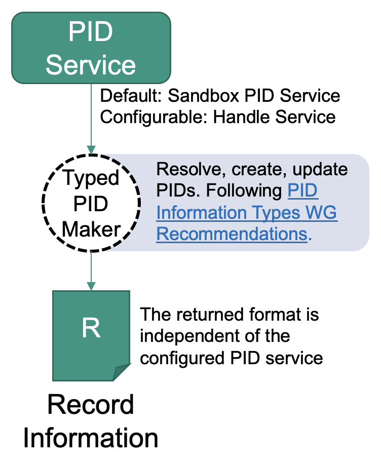
Using the PID information types instance
The advantage of this method is that the PID information types service is an abstraction of the PID system used. This means that if you switch the system in the background, the API will stay the same. The resolving step does currently not involve any FAIR or profile validation.
- Download resolve_pid.bash
- Run this in your terminal:
bash resolve_pid.bash $url "$pid"- where
$urlmust be replaced with the hostname and port (e.g.https://hostname:port) - where
$pidmust be the PID you want to resolve.
- where
The result will be the same as after creating a PID: A JSON document that contains the record information similar to this:
{"pid": "sandboxed/406871","entries": {...}}
Using the handle resolver (try it in your browser!)
Note: Like with the PID information types service, this only works with PIDs built upon the handle system. If you use another system, you need to look for a compatible web-resolver.
- Go to hdl.handle.net.
- Insert the PID in the "Handle" field.
- Check the "Don't redirect to URLs" option.
- Click on the "Submit" button.
You will see a table, similar to the one after this paragraph. It contains a "Type" column, which for a real FAIR Digital Object must contain only PIDs. Exceptions are other types that are required by a PID system, often containing specific, administrative information. The "Data" column contains the value of the according type in the same line. All other columns are handle specific. Here you can see an excerpt of a handle PID record:
| Index | Type | Timestamp | Data |
|---|---|---|---|
| 1 | 21.T11148/8eb858ee0b12e8e463a5 | 2021-04-19 08:59:03Z | {"identifierValue": "http://hdl.handle.net/21.T11998/0000-001A-3905-F", "identifierType": "Handle"} |
| 3 | 21.T11148/9a15a4735d4bda329d80 | 2021-04-15 10:47:38Z | https://linkedsystems.uk/system/instance/TOOL0022_2490/current/ |
| 4 | 21.T11148/709a23220f2c3d64d1e1 | 2021-04-15 10:47:38Z | Sea-Bird SBE 37-IM MicroCAT C-T Sensor |
| 12 | 21.T11148/eb3c713572f681e6c4c3 | 2021-04-19 10:41:18Z | [{ "alternateIdentifier": {"alternateIdentifierValue": "2490", "alternateIdentifierType": "serialNumber" }}] |
| 13 | 21.T11148/178fb558abc755ca7046 | 2021-04-19 10:41:18Z | [{"relatedIdentifier": {"relatedIdentifierValue": "https://www.bodc.ac.uk/data/documents/nodb/pdf/37imbrochurejul08.pdf", "relatedIdentifierType": "URL", "relationType": "IsDescribedBy"}}] |
Update/maintain a PID
Updating means to resolve the record, change it, and then send it back for an update. Therefore this recipe is very similar to "Create a PID".
Ingredients
- Access to a PID Information Types Service or a Testbed instance.
- The information you want to put into the record (new data and replacing data is both possible).
Work Steps (Summary)
- Resolve the PID
- Modify the JSON-Representation of the PID record as you wish.
- Request the PID Information Types service (also available in the testbed) to update the PID and send the JSON record (step 3) together with the request.
Step 1: Resolve a PID
The idea of updating a record is the following: Get the current state, modify the record, then overwrite the whole record with your modified version. To get the current state, you need to resolve the PID, as stated in this recipe.
Step 2: Modify the JSON-Representation of the PID record as you wish
You may use any JSON manipulation tool to exchange any information in the record, even the profile. But there will — like when using the "create API" — be a validation before the PID information types service will do the update. So make sure that the result of your modifications is a valid record according to the (maybe new) profile before proceeding. More on that in the following recipe: Create a PID
Step 3: Send PID update request to PID Information Types service
This request is very similar to the create request. The difference is that you will need to provide a PID which will have its record updated. The record will be validated, and if validation fails, the PID will not be updated.
- Download the bash script to update a PID.
- Remember to store the JSON representation into a file in the same directory as the bash script. Call it for example
record.json. You may use this example record if you like. Note that its "pid" field contains a PID, which will be ignored for PID updates. - Open a terminal and execute this command:
bash update_pid.bash $url record.json $pid- where
$urlmust be replaced with the hostname and port (e.g.https://hostname:port). - where
$pidmust be replaced with the pid of the record that shall be updated.
Delete a PID
Deleting a PID should not be done, as it is against the P in PID. The reason to use PIDs is to give certain guarantees about citing and reusing objects, while keeping the provenance management simple. Usually, current PID systems do indeed offer a possibility to delete PIDs. As we are considering FAIR ecosystems, we do not expose this functionality to maintain reusability and citability to the highest degree possible. It is therefore not supported by the PID information types service (PIT).
But there are solutions if you feel the need, which are better than updating the record to a useless dummy record. There are cases where deleting a PID might seem to be a solution at the first glance:
- The object access is now restricted (e.g., it was made public by accident).
- The object is gone. It might have been an accident, for administrative reasons (free space, archival, ...) or other reasons.
The following recipe will cover what we recommend in such cases. Every recommendation involves modifying/updating the record in specific ways.
Ingredients
See the "Update a PID recipe" to see the ingredients and steps. This recipe will cover in which way the record should be modified in different cases.
Work Steps
If the object was available and a PID registered, but access is now restricted
FAIR Digital Objects can handle restricted access. It is encouraged to make data public if possible, to improve the situation for open data, open science, citizen science and so on. But sometimes it is not possible due to legal or privacy considerations. The important part is that a machine has to be able to know how to access the object if it has the neccessary legitimation. If access is not possible in an automated way, the machine must be able to tell the user what she needs to do to gain access. Profiles need to be able to express this, but currently there is, unfortunately, no consensus about how this information should be represented. Generally, this is what should be done:
- Make sure no confidential information is stored in the record.
- Add information to the record that states that the object access is restricted.
- Add information to the record that states how access can be achieved.
Read this recipe on how to update your record.
If the object is not available anymore and will probably never be available again
It is common consensus in PID handling to store a so called tomb stone in your profile and keep as much information as feasible within the record. To place this tombstone in the PID record, an according profile might need to be chosen. What the tombstone is will depend on the profile. It might be as simple as a human readable string or contain machine readable codes, similar to HTTP status codes.
- Keep as much information as feasible in the record. There is no reason to loose even more information. Fingerprints like checksums might be useful in case data appears again, to identify it.
- Place a thombstone in the record to state that this object is gone, with as much information about why it has disappeared as possible. In case there is a new PID leading to the object, link it in the record.
Read this recipe on how to update your record.
Inform other systems about changes among your PIDs
If a PID has been created or a record has been updated, there might be the need to notify other services about this event. These might be internal or external services to be notified, depending on the use case. Examples are library systems, catalogues, search indices or backup systems. The receiving services could also be bridges to other technologies, like RSS feeds of data publications of a certain kind or other user oriented technologies. Bridging services might also help to close gaps if underlying technologies like TCP/IP change at some point of time.

This recipe shows the steps needed to notify a service.
Ingredients
- A message broker instance, AMQP compatible
- Access to a PID Information Types Service configured to use the message broker instance
- A service that should be notified, implementing the AMQP protocol
Alternatively, for testing/experimentation purposes, you can use a testbed instance, which comes with pre-configured with these ingredients and can be run using docker on your local machine.
Work Steps (Summary)
As soon as the PID information types service is configured to use the message broker, everything happens in the background. These steps show you how to visualize what happens hidden in the background, when using the testbed.
- Run the service that should be notified and register it at the message broker.
- Do any create or update operation on the PID information types service.
- Use the management interface to see the messaging process happening within the message broker.
- View the result of your service.
Step1: Run the service that should be notified and register it at the message broker
The testbed implements the messaging principle using a message broker1. It is a flexible approach that also enables federation and peering. The PIT service instance is by default configured to notify this service about create or update operations using a message. The message only contains a topic string and the PID this message is about. Services need to register in beforehand at the message broker for certain topics in order to receive those messages. It is up to the services what to do with the PID inside. The idea is to use the machine actionability of FAIR Digital Objects to enable services to decide themselves how to handle the received PID and information and data that can be reached by it.
If you use a testbed instance with its default configuration, you can skip this step. It already comes with an indexing service running in the background. If you use your own service, register for all topics beginning with "record.*".
Currently, RabbitMQ is used as a message broker. It implements the „Advanced Message Queuing Protocol“ (AMQP) https://www.rabbitmq.com/
Step 2: Do any create or update operation on the PID information types service
Follow one of the following recipes to trigger a notification:
Both actions trigger notifications. Notifications are currently very small. They simply contain a topic string and a PID, which the receiver may resolve and decide how to act on it. A create event notification might contain the topic "record.create", while an update event notification might have the topic "record.update".
Step 3: Use the management interface to see the messaging process happening within the message broker
Using the testbed, you can access a management interface within your browser, using the following credentials:
- URL: http://localhost:15672/
- Username: guest
- Password: guest
On the first page in the dashboard, you should see something like this graph:
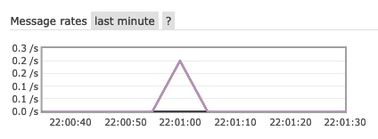
It indicates an incoming message. Feel free to also explore the exchange and queues in the interface. If you used your own message broker, the interface might look different.
Step 4: View the result of your service
If you use the testbed, see if your action is represented in the contained search index. You can read about how to access in the search recipe. If you use your own service, check if it acted as expected.
Search PIDs using record information
To search within PIDs, you need a search index. This recipe is about how such an index can be created and used. This approach generally works using the messaging approach to notify other services, in this case an indexer service. This approach scales well and supports federation, which enables not only to build up one large search index, but also specialized niche indices easily.
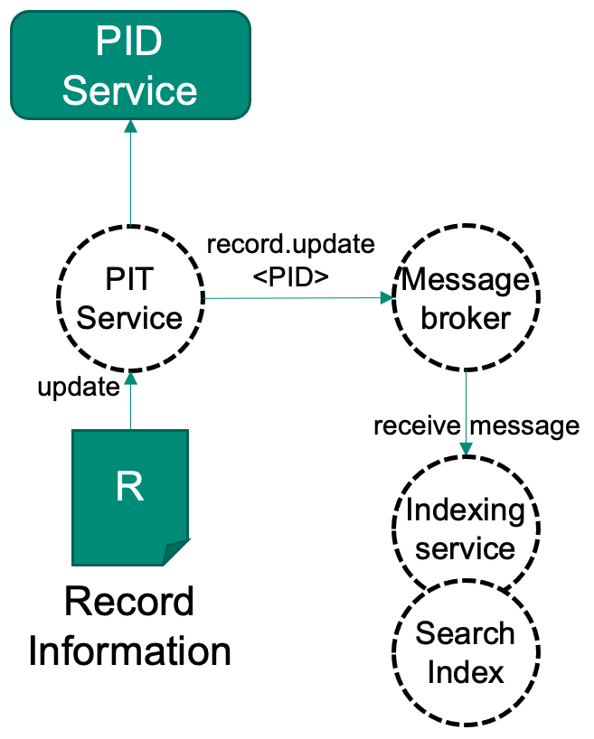
This approach is implemented in the testbed, but there currently only supports the indexing of PIDs which will be announced via message brokers. This means that in the testbed, only PIDs which get created or updated after the search functionality was set up are indexed (change notifications). To also retrieve older PIDs which are not changing, ecosystems must offer further approaches, like regular "record.refresh" messages, indicating non-changing PIDs regularly or similar.
Ingredients
- One or more message brokers to subscribe to for PIDs
- A search index like elasticsearch for example
- An indexer service with AMQP support, which can ingest FDOs into the search index
Alternatively, for testing/experimentation purposes, you can use a testbed instance, which comes with pre-configured with these ingredients and can be run using docker on your local machine.
Work Steps (Summary)
As soon as the PID information types service is configured to use the message broker, everything happens in the background. These steps show you how to visualize what happens hidden in the background, when using the testbed.
- Register your indexer at selected message brokers
- Use the search index to explore the results
- Use the search index APIs to build your custom search functionality.
TODO
Create a Data Type
This receipt will show you how to create your first Data Type in a Data Type Registry. Together with Persistent Identifiers, which we deal with in another receipt, Data Types are a second essential ingredient of a FAIR Digital Object.
Ingredients
- Data Type Registry (DTR), e.g. http://dtr-test.pidconsortium.eu/
- Registered user account at Data Type Registry
- Web Browser
Work Steps
1. Search data type registry for suitable data type
This first step assumes, that you have (read) access to a Data Type Registry, e.g., http://dtr-test.pidconsortium.eu/. Open the link to the DTR in your Web Browser and query for an existing Data Type, which best describes the digital resource you want to typify. You may use the following decision graph showing what will be the next step depending on what you found.

2. Describe/model envisioned data type
Assuming that your search ended up at Create new Data Type, we now have to model the Data Type which we will register later. First, we should decide to which level of detail we want to model our Data Type and which are the consequences.
2.1 Decide on Data Type‘s level of detail
The following overview shows advantages and disadvantages of choosing a certain level of Data Type granularity.
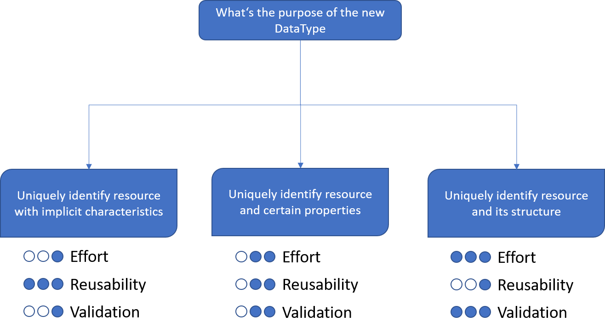
Examples:
| Data Type Name | Data Type PID | |
|---|---|---|
| Granularity 1 | ||
| media-type-IANA-image | 21.T11148/2834eac0159f584bcf05 | |
| media-type-IANA-application | 21.T11148/edff7f2829db22e260a3 | |
| Granularity 2 | ||
| Testbed4inf-Profile | 21.T11148/61fd3446879407065218 | |
| Kernel_Information_Profile_DARIAH | 21.T11148/f1eea855587d8b1f66da | |
| Granularity 3 | ||
| MemberItem | 21.T11148/195f306b750096f4fb6c | |
| Collection | 21.T11148/2037de437c80264ccbce |
The main difference of the different levels of granularity is the depth of the resulting Data Type hierarchy. Data Types of Granularity 1 have no hierarchy at all. Everything they need is defined in one single type. This allows them to be easily created, very generic and they also support basic value validation. Furthermore, their re-usability is comparably high, e.g., as sub-element of other, more complex Data Types.
With Granularity 2, Data Types have at least one hierarchy level as they consist of the Data Type itself and one or more sub-elements, which also have a certain Data Type. These sub-elements also cause the additional effort, as the current receipt Create a Data Type has to be applied to all of them. As a result, a more in-depth validation of a resource can be performed. The re-usability is still quite high, especially for a specific purpose, e.g., to represent PID Kernel Information Profiles.
Data Types of Granularity 3 can be the most complex Data Types. Their intention is to represent a structured resource in detail, e.g., to reflect its entire hierarchy. The main advantage is, that such Data Types allow the full validation of matching resources and a high-degree of machine-readability and -interpretability. However, the effort for creating Data Types of Granularity 3 can be extremely high, especially for nested hierarchies. Furthermore, as they contain very detailed information about a certain resource, their re-usability is very small.
In the course of this receipt, we will model a Data Type of Granularity 3. The following sample resource shows the structure we want to represent as a new Data Type.

2.2 DTR Inquiry
What we have to do now is to check for every property in the hierarchy, whether we can find an appropriate Data Type in the DTR. Therefor, we collect all properties in a checklist:
| Property | DTR Inquiry Result (Reuse, Extend, Create) |
|---|---|
| id | |
| pid | |
| relatedResource | |
| createdAt | |
| lastUpdate | |
| schemaId | |
| recordVersion | |
| metadataDocumentUri | |
| documentHash | |
| aclList |
Now, we go through each element in the checklist and apply the following process filling the checklist successively:

As a result, the previously prepared checklist looks as follows:
| Property | DTR Inquiry Result (Reuse, Extend, Create) |
|---|---|
| id | Reuse unicode-line-string (21.T11148/f1627ce85386d8d75078) |
| pid | Reuse identifier-general (21.T11148/38330bcc6a40ca85e5b4) |
| relatedResource | Reuse URL (21.T11148/e0efc41346cda4ba84ca) |
| createdAt | Reuse date-time-rfc3339 (21.T11148/3bfb2839a6967114bc3e) |
| lastUpdate | Reuse date-time-rfc3339 (21.T11148/3bfb2839a6967114bc3e) |
| schemaId | Reuse unicode-line-string (21.T11148/f1627ce85386d8d75078) |
| recordVersion | Reuse non_negative_integer (21.T11148/eca44a2ac007d5e126f5) |
| metadataDocumentUri | Reuse URL (21.T11148/e0efc41346cda4ba84ca) |
| documentHash | Reuse sha-checksum (21.T11148/66bf538937bf74bfc48a) |
| aclList | Create |
It's highly recommended to note the PIDs of the identified Data Types, as we'll need them later.
Almost done, only aclList is still open. As this property is another complex type, we have to create another checklist filling it the same way as we just did:
| Property | DTR Inquiry Result (Reuse, Extend, Create) |
|---|---|
| sid | Reuse unicode-line-string (21.T11148/f1627ce85386d8d75078) |
| permission | Create |
3. Register data type(s) in data type registry
In the following steps, Data Types which were not found in the DTR, e.g., marked as Extend or Create in your checklist, have to be registered at the DTR. This is done in a reverse order starting with missing Data Types at the lowest hierarchy level. In our case, we start with registering the permission Data Type in order to be able to proceed with defining the aclEntry Data Type and so forth.
3.1 Register new Child-Data Type(s)
Coming back to our aclEntry checklist we see, that the permission Data Type is missing. We'll now register this new Data Type at our DTR instance.
| Property | DTR Inquiry Result (Reuse, Extend, Create) |
|---|---|
| sid | Reuse unicode-line-string (21.T11148/f1627ce85386d8d75078) |
| permission | Create |
In order to create Data Types at the DTR, write permissions are required. In order to receive proper permissions, you'll have to create a user account. Typically, you'll have to contact the provider of the DTR in order to request a new user account.
After logging in, you are able to create a new Data Type using the Create Dropdown Button next to the search field. Here you should select PID-BasicInfoType.

As you can see in the screenshot, we just assign a Type Name and a Contributor in the upper section of the form before we proceed to the lower part. Here we add a new Property, assign string as Data Type and add the enumeration list containing all possible values of our envisioned permission Data Type.

We may also assign a Default Value before we Save the new Data Type. As a result, the Data Type is created and gets a PID assigned. In our case, this PID is 21.T11148/1785713451d01948bc96, which we add to our checklist for the following step.
| Property | DTR Inquiry Result (Reuse, Extend, Create) |
|---|---|
| sid | Reuse unicode-line-string (21.T11148/f1627ce85386d8d75078) |
| permission | Create permission (21.T11148/1785713451d01948bc96) |
Now, we've all elements to create the aclEntry Data Type, which will be serve as single element of aclList in our modeled structure.
We create a new Data Type but this time, we select PID-InfoType at the Dropdown Button.

After adding Data Type Name and Contributor we continue with defining the properties. According to our checklist we should add two properties: sid and permission.


We assign a name, e.g., the name of the attribute in our structure. Under TID of Existing Data Type we put in the according PID from our checklist representing the respective property, e.g., 21.T11148/f1627ce85386d8d75078 for sid. Furthermore, we may add Representation and Semantics information, e.g., about obligation, repeatability or for providing a constant value. If done, we can save the aclEntry Data Type and receive a PID, in our case 21.T11148/1785713451d01948bc96, which we can now use to define the aclList in the next step.
3.2 Register extended Child-Data Type(s)
After registering elements of the lower hierarchy, e.g., permission and aclEntry we now proceed with the next higher level, namely the aclList Data Type. We start as before with creating a new Data Type of type PID-InfoType.
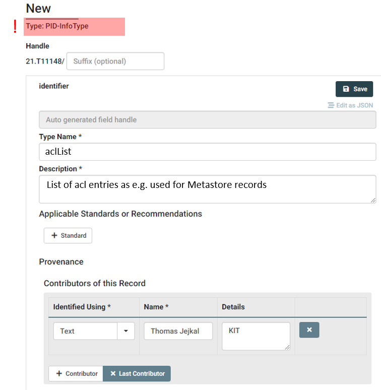
We add a Type name as well as the Contributor information as for all other Data Types. The following steps are slightly different, as you can see in the following screenshot.
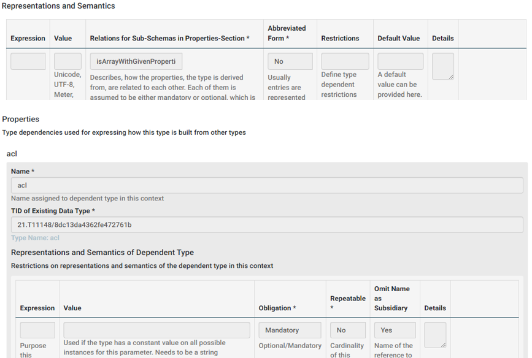
First, in the Represenatations and Semantics section we add the value isArrayWithGivenProperties under Relations for Sub-Schemas in Properties-Section. This states, that the properties defined later will form an array representation in the resulting type, which is what we want for the aclList. Afterwards, we add one property, which has the Data Type of an aclEntry we've just defined. Note here, that the Data Type Name must not match the actual name of the used Data Type, which was aclEntry but can be freely chosen. However, for the Existing Data Type we use the PID of the aclEntry. In our example, we set the Obligation to Mandatory and do not allow multiple entries of aclList by setting Repeatable to No. Furthermore, we set Omit Name as Subsidiary to Yes. Please see to following example to understand the reason behind.
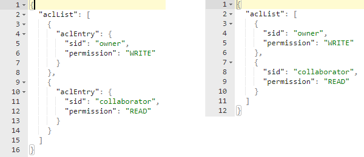
On the left side you see an aclList without omitting the name of subsidiaries. You can see aclEntry appearing on each child element. On the right side you see what omitting of subsidiary names does and as this is the commonly used representation of array elements, we omit the name aclEntry by setting the property. That's it, we defined our aclList Data Type and we can save it. In our case, the resulting PID is 21.T11148/8b7b3f1b796a4dc1030f which we can now add to our main checklist.
| Property | DTR Inquiry Result (Reuse, Extend, Create) |
|---|---|
| id | Reuse unicode-line-string (21.T11148/f1627ce85386d8d75078) |
| pid | Reuse identifier-general (21.T11148/38330bcc6a40ca85e5b4) |
| relatedResource | Reuse URL (21.T11148/e0efc41346cda4ba84ca) |
| createdAt | Reuse date-time-rfc3339 (21.T11148/3bfb2839a6967114bc3e) |
| lastUpdate | Reuse date-time-rfc3339 (21.T11148/3bfb2839a6967114bc3e) |
| schemaId | Reuse unicode-line-string (21.T11148/f1627ce85386d8d75078) |
| recordVersion | Reuse non_negative_integer (21.T11148/eca44a2ac007d5e126f5) |
| metadataDocumentUri | Reuse URL (21.T11148/e0efc41346cda4ba84ca) |
| documentHash | Reuse sha-checksum (21.T11148/66bf538937bf74bfc48a) |
| aclList | Create aclList (21.T11148/8b7b3f1b796a4dc1030f) |
The checklist on the top hierarchy level is now complete and we can define our final Data Type representing our envisioned structure.
3.3 Register main Data Type
Finally, we arrived at the step where we collected everything in order to create our main Data Type. All these information are collected in our checklist, which we use now for defining this Data Type.
| Property | DTR Inquiry Result (Reuse, Extend, Create) |
|---|---|
| id | Reuse unicode-line-string (21.T11148/f1627ce85386d8d75078) |
| pid | Reuse identifier-general (21.T11148/38330bcc6a40ca85e5b4) |
| relatedResource | Reuse URL (21.T11148/e0efc41346cda4ba84ca) |
| createdAt | Reuse date-time-rfc3339 (21.T11148/3bfb2839a6967114bc3e) |
| lastUpdate | Reuse date-time-rfc3339 (21.T11148/3bfb2839a6967114bc3e) |
| schemaId | Reuse unicode-line-string (21.T11148/f1627ce85386d8d75078) |
| recordVersion | Reuse non_negative_integer (21.T11148/eca44a2ac007d5e126f5) |
| metadataDocumentUri | Reuse URL (21.T11148/e0efc41346cda4ba84ca) |
| documentHash | Reuse sha-checksum (21.T11148/66bf538937bf74bfc48a) |
| aclList | Create aclList (21.T11148/8b7b3f1b796a4dc1030f) |
At first, we create a new Data Type of Type PID-InfoType.

As before, we assign a Type Name, maybe a short Description and Contributor information. Afterwards, we add properties for each entry in our checklist assigning a Data Type Name, e.g., the value in the Property column of our checklist, and the TID of Existing Data Type, which is the PID value in the DTR Inquiry Result column. The Obligation we may or may not set to Mandatory, the Repeatable value should be set to No as each attribute of our structure can also appear once and Omit Names as Subsidiary should also stay No in that case, as we need to map the single values to the according properties by name. After transferring all properties we can save the metadataRecord Data Type and receive a new PID with value 21.T11148/6a29026053036431de11.
This PID now represents exactly the structure shown at the beginning:
We are finished now with this receipt. If you like, you can check the next page for possible applications of the defined Data Type.
Create a PID Kernel Information Profile
In receipt we will show how you to create a PID Kernel Information Profile (KIP). The KIP is a special Data Type which allows you to define and validate elements in a PID Information Record. The goal is, to store a small subset of metadata in this record directly in the PID resolving service to allow fast, machine actionable decisions already on the PID-level. Thus, a machine can decide on further resolution of the referenced content or withdraw the PID if does not contain any interpretable information.
Ingredients
- Data Type Registry (DTR), e.g. http://dtr-test.pidconsortium.eu/
- Registered user account at Data Type Registry
- Web Browser
Work Steps
Before you start using this recipe it is recommended, to go through the recipe Create a Data Type as it explains basics for using the Data Type Registry, which is also the place where PID Kernel Information Profiles are created and managed.
1. Search data type registry for suitable data type
This first step assumes, that you have (read) access to a Data Type Registry, e.g., http://dtr-test.pidconsortium.eu/. Open the link to the DTR in your Web Browser and query for an existing Kernel Information Profile, which might fit to your use case. The key question should be, which machine actionable decisions must be possible based on the KIP contents. There are probably a couple of basic and generic profiles available which can be reused or at least taken as an example. You may use the following decision graph showing what will be the next step depending on what you found.
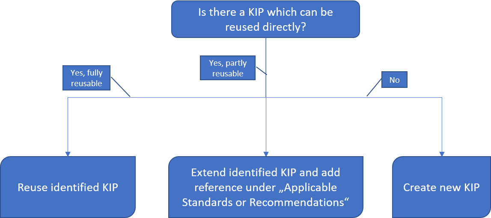
In the course of this recipe we assume, that we have to create a new KIP.
2. Describe/model envisioned KIP
Assuming that your search ended up at Create new KIP, we now have to model the profile which we will register later. Before we start thinking about possible elements of our new KIP, we should internalize a couple of key principles of Kernel Information Profiles. Those are listed on the next page.
2.1 Call to mind basic KIP principles
Principle 1:
The primary purpose of a PID KI record is to serve machine actionable services.
This means, you should *avoid including attributes whose main audience are humans.
Principle 2:
Attributes (items) in the profile are expressed as key-value pairs where the values are simple (indivisible).
In other words, you should avoid using complex attribute values, e.g., JSON or XML structures, as a consumer might have difficulties while interpreting them. Furthermore, it is not recommended to use frequently changing attribute values, e.g., incomplete lists, as this would increase the frequency of changes of PID records making a proper caching and indexing of them hard.
Principle 3:
PID Kernel Information is stored directly at the resolving service and not referenced.
This means, that values which are required for interpreting the PID records should not be stored in an external system, e.g., additional metadata describing the referenced resource. The main reason is, that additional round trips using different interfaces should be avoided for performance, interoperability and reusability reasons.
Principle 4:
PID Record values should change infrequently and possible without human interaction.
The guiding principle here is that PID Records are made for machines by machine. Human interaction would be time consuming and error prone, thus PID Records should be filled and updated according to a KIP by tools taking care of translating information coming from e.g. repositories into information following the KIP definition used.
Principle 5:
A profile should adhere to the following two requirements. Doing so may reduce migration issues in the event of profile revision:
* Every attribute in a profile depends only on the identified object and no other objects.
* Every attribute in a profile describes the object directly and does not describe another attribute in the same profile.
Explaining this principle works best with a counter example. Let's assume our PID refers to a file and we want to include file format information, e.g., format name and version, into the PID Record. Including both information into the KIP of the referenced file would break with this principle, as the version number is related to the file format and not the the referenced resource. Instead, file format and version should e.g. be stored in a separate PID's Record and this PID should then be used in our profile to uniquely identify the file format with its specific version.
Principle 6:
A PID Record is a non-authoritative source of metadata.
This final principle is related to the use of PID Kernel Information. All information stored in the PID Record are non-authoritative, which means, that they might be outdated or even invalid when accessing them. It's in the duty of the provider of such information to keep them up to date in the PID Record. Thus, the only authoritative source of metadata is the original source of information stored in the PID Record.
2.2 Decide on KIP contents
With our six key principles in mind, we can now start defining our PID Kernel Information Profile. As a basis, it is highly recommended to adopt the Recommendation on PID Kernel Information of the Research Data Alliance. Doing so, we'll start with a couple of recommended elements.
| Property | Description |
|---|---|
| kernelInformationProfile | PID of the KIP for this PID record |
| digitalObjectType | PID of the Data Type of the referenced object |
| digitalObjectLocation | Location URL of the referenced object |
| digitalObjectPolicy | PID of the policy object with e.g. license information |
| etag | Etag of the current state of the referenced object |
| dateModified | Last modification date of the references object |
| dateCreated | Creation date of the referenced object |
| version | Version of the referenced object |
| wasDerivedFrom | PID of another object according to PROV-DM recommendation |
| specializationOf | PID of another object according to PROV-DM recommendation |
| wasRevisionOf | PID of another object according to PROV-DM recommendation |
| hadPrimarySource | PID of another object according to PROV-DM recommendation |
| wasQuotedFrom | PID of another object according to PROV-DM recommendation |
| alternateOf | PID of another object according to PROV-DM recommendation |
As we've learned in the recipe on Create a Data Type, we now prepare our checklist containing at least the recommended properties and their Data Type PIDs.
| Property | DTR Inquiry Result (Reuse, Extend, Create) |
|---|---|
| kernelInformationProfile | KernelInformationProfile (21.T11148/076759916209e5d62bd5) |
| digitalObjectType | digitalObjectType (21.T11148/1c699a5d1b4ad3ba4956) |
| digitalObjectLocation | digitalObjectLocation (21.T11148/b8457812905b83046284) |
| digitalObjectPolicy | digitalObjectPolicy (21.T11148/8074aed799118ac263ad) |
| etag | etag (21.T11148/92e200311a56800b3e47) |
| dateModified | dateModified (21.T11148/397d831aa3a9d18eb52c) |
| dateCreated | dateCreated (21.T11148/397d831aa3a9d18eb52c) |
| version | version (21.T11148/c692273deb2772da307f) |
| wasDerivedFrom | wasDerivedFrom (21.T11148/c6e4c19f294ee6f41b1e) |
| specializationOf | spezializationOf (21.T11148/ab53242825e85a0a7f76) |
| wasRevisionOf | wasRevisionOf (21.T11148/2a1cad55473b20407c78) |
| hadPrimarySource | hadPrimarySource (21.T11148/a753134738da82809fc1) |
| wasQuotedFrom | wasQuotedFrom (21.T11148/beaeecebec408908de35) |
| alternateOf | alternateOf (21.T11148/432132bdbd946b2baf2b) |
Now you may add additional properties, which you need according to your use case, e.g., the reference to a utilized instrument, geo location information, data format information, or information about software that can be used to process the referenced resource. Afterwards, for each of the added properties the following evaluation process, similar to the Data Type Registry Inquiry while creating a new Data Type, has to be performed.
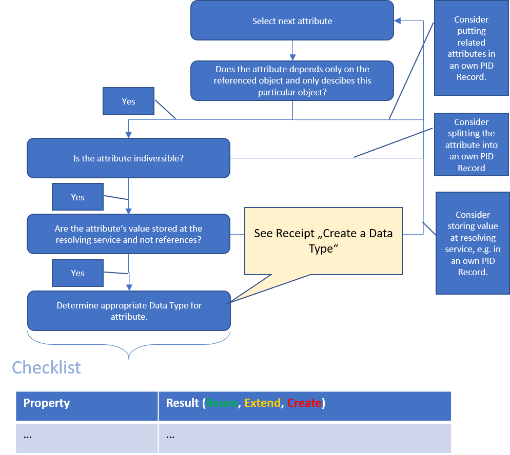
After this process, you'll end up with a checklist containing either matching Data Type PIDs for all your properties or you'll have to create a new Data Type for the one or the other property. In that case, please refer to the recipe Create a Data Type before you proceed.
3. Register new KIP in Data Type Registry
After collecting all properties and their Data Types in our checklist, the next step is to create a Kernel Information Profile in the Data Type Registry. After logging in, you are able to create a new Data Type using the Create Dropdown Button next to the search field. Here you should select KernelInformationProfile.
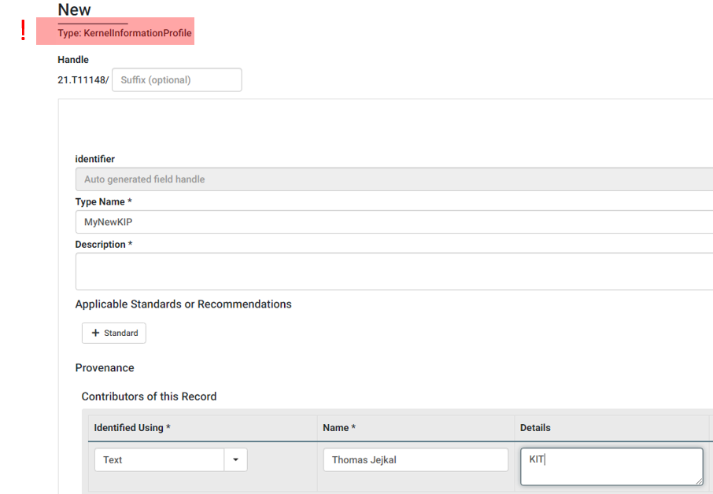
You may now add a name for the profile as well as constributor information as shown in the screenshot above. Afterwards, you have to transfer all properties in your checklist to properties of your Kernel Information Profile entry in the Data Type Registry. For more details, please check the recipe on Create a Data Type.
Appendix
This chapter contains additional information, extending the scope of the recipes.
PID Information Types service
Our PID information types service implementation is a service that abstracts the use (CRUD) of PID services and validation using a data type registry. Its API makes it easier for clients to handle PIDs and make sure the records are validated before registering. It also offers possibility to notify other services about new or updated PIDs, which enables data curators to flexibly build search indices. It's use cases are described in the recipe collection "Working with PIDs".
A PID information types instance for production needs a prefix of a compatible PID service, which is a financial and administrative matter and is something not every researcher will do on her own. Consider to find a service provider which can give you access to a PID information types service instance and skip the rest of this appendix. If you do have a PID prefix and want to do it yourself or want to try it with a in-memory "sandboxed" PID service (for testing only!), read on.
The PIT service is part of the testbed
Please note that the PID Information Types Service is still in heavy development and not yet ready for production use. (June 2021)
Note: The PID information types service does not support every PID system, but can be extended. Feel free to open an issue on the Github Page if your PID type is not supported. As of now (June 2021) it supports only PID services building on the federated Handle System.
Also, it includes a small sandboxed PID service in it's default configuration for testing purposes. Note that these sandboxed PIDs are not publicly resolvable, do only exist in this instance and are not stored permanently. But it might be enough for you to e.g. test the API or your PID workflows.
PID Information Types Source code and documentation on Github.
Testbed source code and documentation on Github.
FAIR DO Ecosystem Testbed
The FAIR Digital Object Ecosystem Testbed is developed at Karlsruhe Institute of Technology (KIT) as a contribution to the Helmholtz Metadata Collaboration (HMC)1 platform. HMC promotes the qualitative enrichment of research data by means of metadata – and implements this approach across the whole Helmholtz Association of German Research Centers. The introduction of FAIR Digital Objects plays a dominant role in the development of technical services in HMC since it promises
- to harmonize the machine-actionable handling of research data objects on a concept level,
- to provide metadata for technical and semantic interoperability,
- to integrate a wide range of digital objects including data, software and other research artifacts, and
- will enable the cross-disciplinary exploitation of the contents of big research data collections.
Please note the testbed is not meant to be used in production as a whole, as it may contain services in a proof-of-concept state and is subject to change. You may use it for experimentation, inspiration and discussion, or limit the set of services to those who are production-ready.
Intention
The FAIR Digital Object Ecosystem Testbed intends to demonstrate the feasibility of FAIR DO usage, to allow easy access to FAIR DOs and to to drive discussions about the implementation.
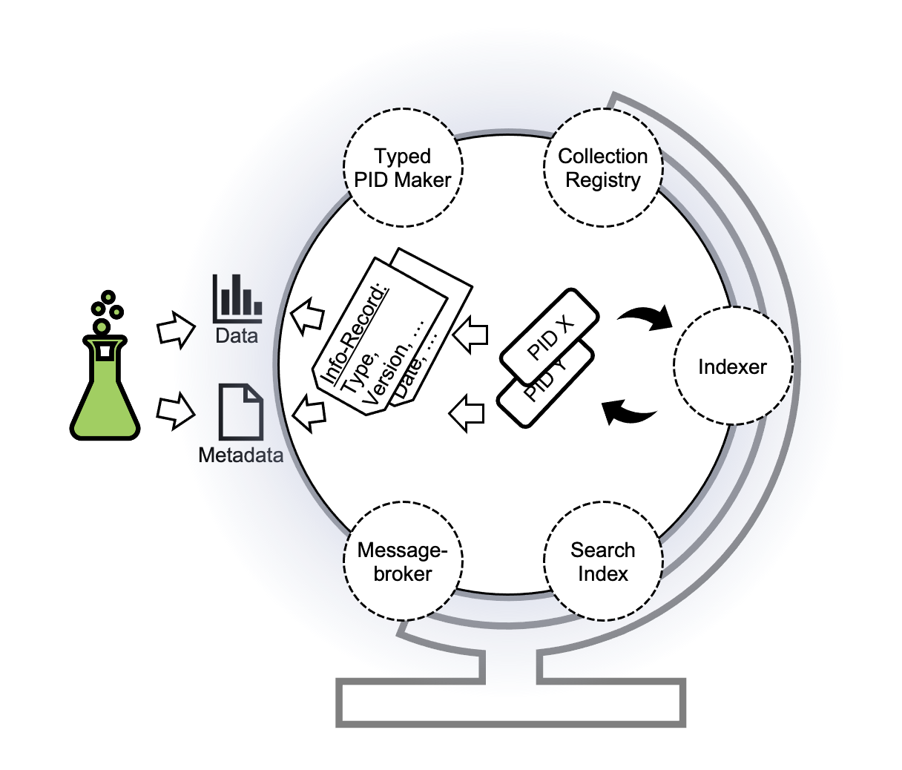
The Testbed consists of a set of services to facilitate and demonstrate generic use cases for FAIR DOs, with a strong focus on PIDs and PID Information Records, and explicitly not covering data storage and repositories. It is not a hosted demonstrator. Instead, you can download and run it on your everyday computer2. As the services interact to fulfill some of the use cases, we describe them as an ecosystem. Yet, every service can be used independently3 4. The Testbed can also be used as an environment to test the interplay with other services (e.g. repositories).
Testbed instructions and download: https://github.com/kit-data-manager/testbed4inf
Service composition definition file in the testbed: https://github.com/kit-data-manager/testbed4inf/blob/master/docker-compose.yml
KIT Data Manager services https://github.com/kit-data-manager/
Implementation
The FAIR Digital Object Implementation is based on the federated Handle PID System5 and PID Kernel Information (within the PID records). To make the start of the testbed as easy as possible, the testbed services are abstracted using Docker Containers and can be started as a bundle using Docker-Compose. As it uses external resources like external containerized services, the Handle system and an external type registry6 , an internet connection is required. A central component of the testbed is the PIT service, offering a simple API to ease the usage of PIDs in a FAIR way.
The testbed download and instructions are available at https://github.com/kit-data-manager/testbed4inf.
Implemented use cases
- Create a PID with a validated record
- Read a PIDs record information (Resolve a PID)
- Manipulate a PID record with validated information (Update a PID record)
- Inform other systems about changes
- Searching PIDs using record information
Contact
Via Github: https://github.com/kit-data-manager/testbed4inf/issues
Via Mail:
- Pfeil, Andreas andreas.pfeil@kit.edu
- Jejkal, Thomas thomas.jejkal@kit.edu